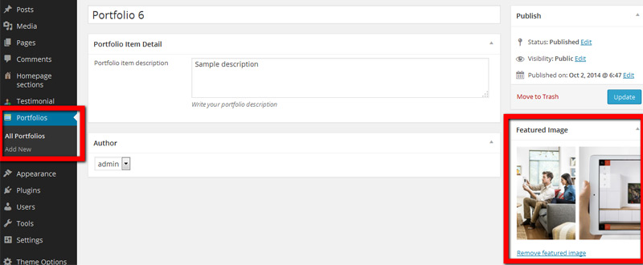

Sync - WordPress App Landing Page
General
Sync WordPress landing page theme is converted from Sync HTML landing page version http://themeforest.net/item/sync-responsive-landing-page/7863875
Please read this documentation carefully. If you have any question, problems with customisation feel free to send me a message via http://themeforest.net/user/iWebStudio
Installation
This is basic instruction for installing Sync theme including setup wordpress core itself
First, Install Wordpress
WordPress is well known for its ease of installation. Under most circumstances installing WordPress is a very simple process and takes less than five minutes to complete. Many web hosts now offer tools (e.g. Fantastico) to automatically install WordPress for you.
For more information, please read http://codex.wordpress.org/Installing_WordPress page.
Second, Extract (Unzip) Sync Full Package ZIP File
Please extract (unzip) Sync ZIP file from ThemeForest download page. You will see some folders: Documentation, PSD, Sample data, Installable Theme
Third, Uploading Sync Wordpress Theme
You can find zipped installable Sync theme file under Theme folder. Then Go to Appearance > Themes page and click Install Themes tab. Then click upload link, upload the 'installable theme' zip file and activate the theme.
Fourth, Install required plugins
After install and activate Sync you must install required plugins to make Sync theme works properly, Go to Appearance --> Install plugins
There are 5 required plugins that need to be installed:
1. iWebtheme Sync Shortcodes
2. Meta box
3. iWebtheme Sync cpt
4. Simple Custom Post Order
5. Redux framework
Fifth, Importing Sync Sample Data & Theme options
You can make your learning curve faster and your development easier by importing Sync Sample Data and theme options. You can find Sync Sample Data in XML file and theme-options.json file within Sample Data folder
1. Import sample data (.xml file)
- Go to Tools > Import page and click Wordpress Importer link (You will be asked to install Wordpress Importer at the first time). Then upload Sync XML file (please choose .xml) and complete the process.
*** There are 2 option of XML sample data files:
- all content (in folder AllContent ) & - separated ( in folder Separated )
*** if you get any issue while importing all-content.xml file, you can import one by one .XML file (go to separated folder and import each .XML file: homepagesections.xml, pages.xml, portfolios.xml, posts.xml, testimonial.xml )
2. Import theme options (theme-options.json)
* Also you may need to import 'theme-options' data so you'll get same theme options setting as our live preview.
- Go to Theme Options > Import/Export then click 'Import from file' button, then paste all inside 'theme-options.json' (open theme-options.json with any text editor like notepad, copy the code then paste to your 'import from file' box) then click 'Import"
Landing page structure
Here's the Landing page structure from front end view
1. Header --> Configuration of header/intro area is from Theme options
2. Home Section --> From homepage sections
3. Footer
Portfolio
Add portfolio item
Adding portfolio item is simple just like write a post or page, from admin dashboard see the left side on 'Portfolios' tab then 'Add New' if you want to add new portfolio item, portfolio thumbnail/preview image uploaded via " Set featured image " box .
PS: minimum portfolio image is 400 x 300 (in px)

Home landing page setup
1. You've imported Sync Sample data
If you've imported our xml sample data & theme options, then you can just set 'Static front page'
Go to Settings > Reading page and choose A static page option for Frontpage / main homepage display. Then choose a page that will be used for your Frontpage from the dropdown.
* You can select any page containing word 'Home'
2. Without our Sample data
Generally, you can follow these steps in order to setup your landing page
- Create new page for static front-page
Make sure to select 'Home landing page' page template
- Create Home page sections
Go to 'Homepage sections --> Add New'
Your landing page (homepage) consist of multiple sections, you need to create one by one Home page section for your homepage.
Shortcodes
See screenshot above, Shortcode name from left to right :
1. Row
Must inserted before 'Column'
[row]
....
[/row]
2. Column
Sync theme based from Bootstrap 3, so you can refer to http://getbootstrap.com/css/#grid for column layout
From the shortcode you can select from 1 to 12.
* You must insert 'row' before inserting column
Example 2 columns layout with Col 6 and Col 6
[row]
[column col="col-sm-6 col-md-6 col-lg-6"]
your content here
[/column]
[column col="col-sm-6 col-md-6 col-lg-6"]
your content here
[/column]
[/row]
3. Button
example:
[syncbutton size="small" url="#"]Read more[/syncbutton]
4. Testimonial
example shortcode:
[testimonials count="3"]
before insert 'testimonial' shortcode you must have testimonial items
5. Contact info
example shortcode :
[contactinfo phone="88899658" email="name@email.com" address="Main street X.100 V City" map="https://map.google.com"]
6. Styled list
example shortcode:
[icon-list]
[item icon="fa-check"]Your list itemp[/item]
[item icon="fa-check"]Your list itemp[/item]
[item icon="fa-check"]Your list itemp[/item]
[/icon-list]
7. OS list
example shortcode:
[os-list]
[os type="ios" url="#"]App Store[/os]
[os type="android" url="#"]Android Market[/os]
[os type="windows" url="#"]Windows Mobile[/os]
[/os-list]
8. Animation
put [animate] .... [/animate] shortcode to wrap desired element/content, except there are 2 shortcodes (doubleimages and responsive image ) that already have animate in shortcode
[animate effect="fadeInDown" delay="200"]
your content here
[/animate]
9. Slider wrapper
slider wrapper must be inserted before slider
[sliderwrapper]
your slider item here
[/sliderwrapper]
10. Slider
example shortcode:
[slideritem img="http://localhost/sync/wp-content/uploads/2014/09/1.jpg" alt=""]
example slider shortcode wrapped in 'Slider wrapper'
[sliderwrapper]
[slideritem img="http://localhost/sync/wp-content/uploads/2014/09/1.jpg" alt=""]
[slideritem img="http://localhost/sync/wp-content/uploads/2014/09/2.jpg" alt=""]
[/sliderwrapper]
10. Responsive image
To insert responsive image, works like regular wordpress image uploader
11. Portfolio
example shortcode:
[portfolio count="3"]
before insert 'portfolio' shortcode you must have portfolio items

12. Feature item
example shortcode:
[feature icon="fa-check" title="Responsive"]
Your feature item description here
[/feature]
13. Service item
example shortcode:
[serviceitem icon="fa-cogs" title="Web design"]
Your service box description here
[/serviceitem]
14. Pop up video
example shortcode:
[videointro url="http://vimeo.com/14428901" caption="Video Presentation"]
15. Mailchimp subscribe form
example shortcode:
[mailchimpform action="http://themespixel.us7.list-manage.com/subscribe/post-json?u=99a70ac1e9b8dd0bce63b89b1&id=b83bfc4581&c=?"]
How to get your mailchimp action URL:
(IMPORTANT)
from your form "action" attribute please change post?u= to post-json?u= and then at the end of the forms action append &c=?
Your form tag will look something like this by default:
-
http://xxxxx.us#.list-manage1.com/subscribe/post?u=xxxxx&id=xxxx
change it to look something like this
-
http://xxxxx.us#.list-manage1.com/subscribe/post-json?u=xxxxx&id=xxxx&c=?
Theme options
Sync theme has powerful and user friendly theme options to set theme functionalites, each field has 'description' on the right or bottom to make you understand.
Go to Appearance > Theme Options to open theme options
Conclusion
Once again, thank you so much for purchasing this theme. As we said at the beginning, I'd be glad to help you if you have any questions relating to this theme. No guarantees, but we'll do the best to assist. If you have a more question regarding Sync Wordpress Theme, you can drop us message through our profile contact from here.